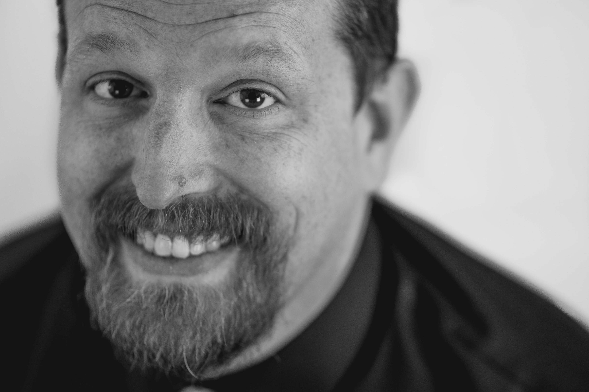
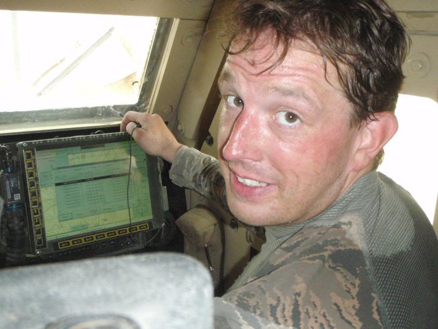
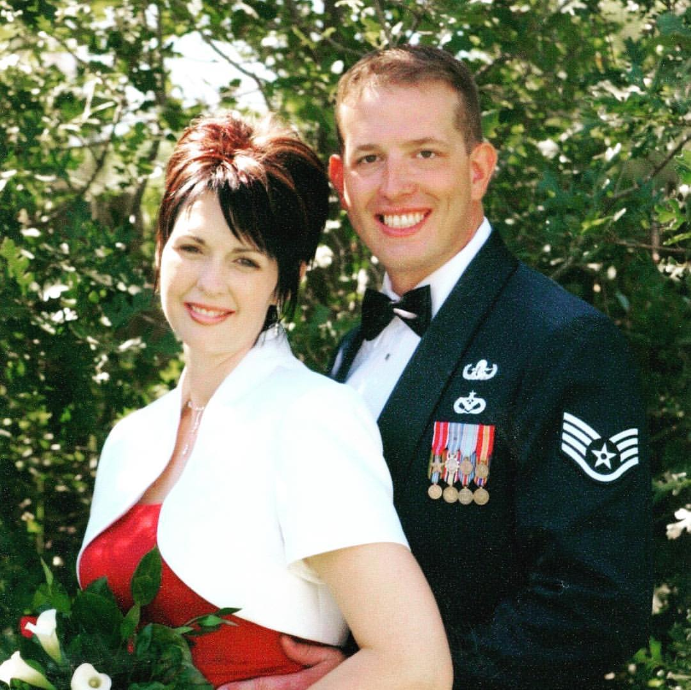
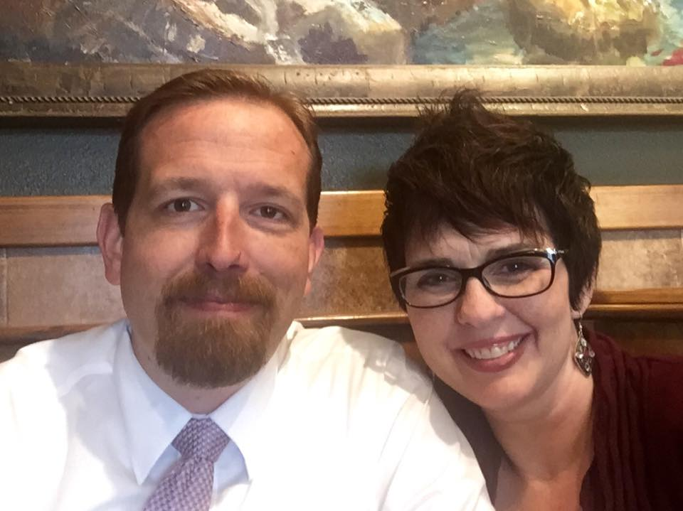
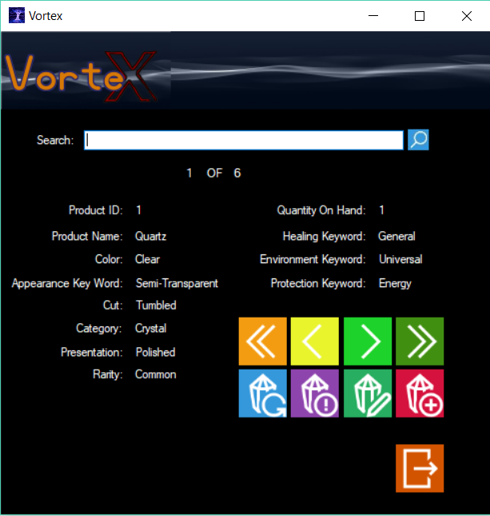
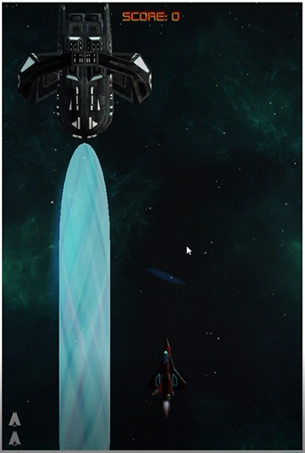
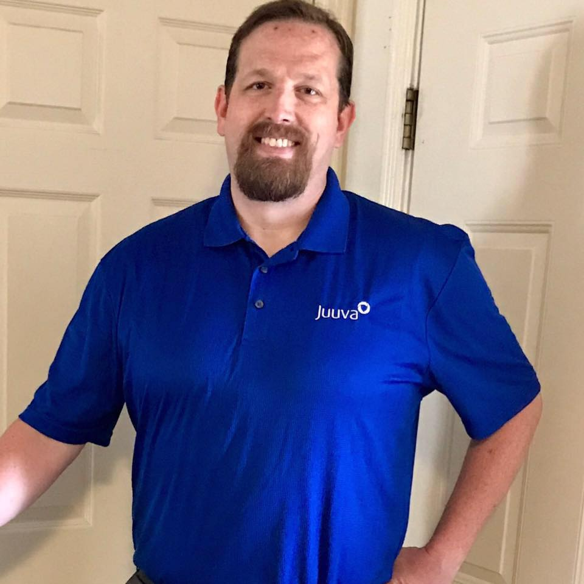

About Evan Knight
I am Evan, welcome to my page about me! Easily the subject I am most knowledgable about! I know more about me than any other person. Let me share a few things about me that I find most interesting!
Great leaders are almost always great simplifiers, who can cut through argument, debate and doubt, to offer a solution everybody can understand.
- Colin Powel
The Begining
 This is me. I was born and raised in Ogden, Ut. I graduated from Weber High School in 1993. I had graduated with my certification as a Nurses Assistant and worked at Nursing Home for a year before I left for Mexico where I served a 2 year mission for my church.
After returning from Mexico I enrolled at Weber State Univerisity and began working at McKay-Dee Hospital as an Orderly and EKG Technician. I met my first wife at this time. We dated for a short time and after we married I joined the US Air Force with the intent of using the GI Bill to pay for medical school. Things didn't quite work out that way.
Military Life
When I went to enlist in the Air Force, I had intended to join one of the medical career fields. Unfortunately for me, they had filled more than their quota for that month. Not really having a back up plan, the recuiter started reading down the list of career fields that they were still trying to fill. When he read "Explosive Ordnance Disposal" I stopped him and asked what that was. He didn't know so he just read the canned description, but as he did, I imagined taking expired explosives out to a demolition range, then from a protected bunker blowing tons of bombs sky high!! I didn't even hesitate, I signed right there! Both my wife at the time and my mother were "less than pleased" with my impulsive decision.
In the long list of decisions that changed the course of my life, this one has had the most effect on me. I became the consumate bad-ass that most people only see in movies. I was highly skilled and proficient in disarming everything from simple bombs to the most complex missiles; pipe bombs to terrorist devices, biological weapons and the most sophisticated nuclear ordnance ever built. I have lived adventures to fill several lifetimes, survided unspeakable horors, and endured the darkest depths of loss and hopelessness. I am grateful for my path through life, it has shaped me into who am. But, if I could alter one thing, I would have never have chosen EOD.
Husband

After some time in the Air Force, the stess of my job and frequent deployments, put too much strain on my mariage, and my first wife and I devorced after 9 years of mariage. Thankfully we remain friends and have commited to co-parent our three kids equally and respectfully. I met my current wife not long after and a year later we married and have been together ever since. It's nice beating the odds of blending a family. But, my bestfriend and companion has been my anchor when I faced the darkest moments of my life. We have become a fantastic team, despite all the obstacles we have faced. I am a better person because of the encuragement ans support she lovingly gives to our whole family.

Developer
Since my retirement from the Air Force, I live a much more stress-free life. But that doesn't mean I have any less fun!


I have since returned to Weber State, this time as a Computer Science Major. I have been learning code and writing programs since I was 9 years old. I continued my education taking computer science courses all through high school. But I couldn't see the future of software engineering, and persued other avenues. But I have a chance now to follow my passion. If I was every good at what I did in the Air Force, it pales in comparison to my what I am best at, computer science. Data structures, manupulating 1s an 0s, solving problems to make my code elegant and efficient is one of the ways I feel most fullfilled.
Entrapenuer
Recently I have found that I am good at business. I have started my own tech company. Blue Sun Systems is a general service company that can service and repair computers and electronics and contracts with other firms to write code for thier projects.
My wife and I also sell and market personal care products that have helped me to regain a significant portion of my quality of life. I was pretty damaged after my time in the Air Force, mentaly, emotionally, and physically. I was in constant, intense pain, walked with a cane, and was a candidate for hip replacement surgury even at my young age. With the products I was introduced to I was able to stop taking the heavy narcotics I had been using for years and no longer required the use of a cane. I can walk for hours without any illeffects where I used to strugle walking more than 300ft. We have been very successful and on track to earn $100k in revenue from our first full year.
This is the end